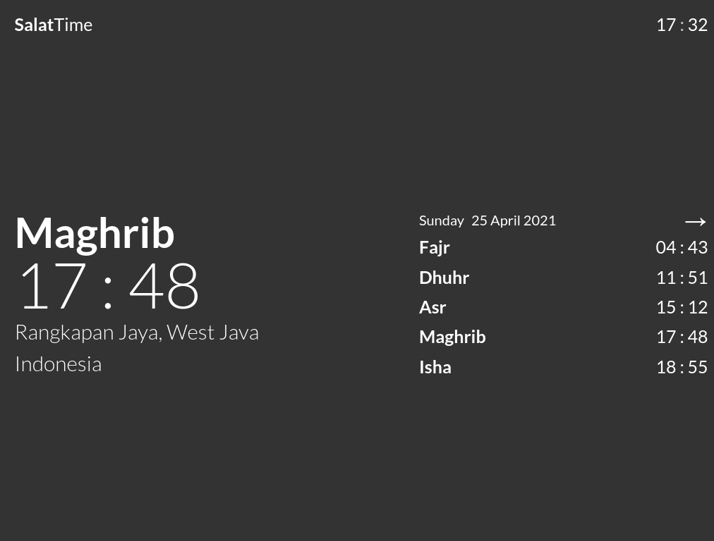

Salat Time
View siteSalat Time is a location based daily salat schedule board. It was made to explore browser geolocation API.
The geolocation and salat schedule are pretty accurate. Therefore it is useful for keeping track of salat time, especially in places where call for salat is not publicly broadcasted.
It is also designed reponsively for desktops and mobile devices display.
Desktop
Mobile